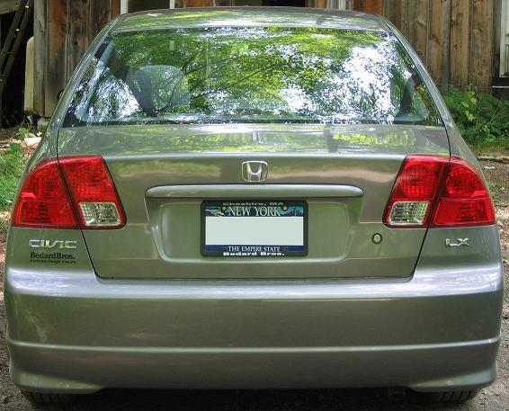
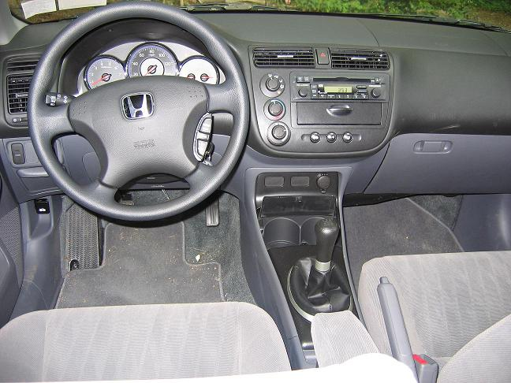
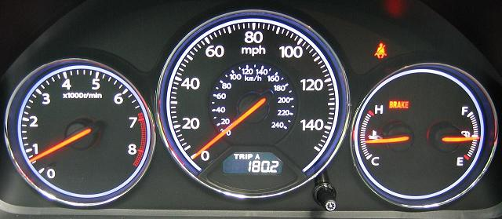
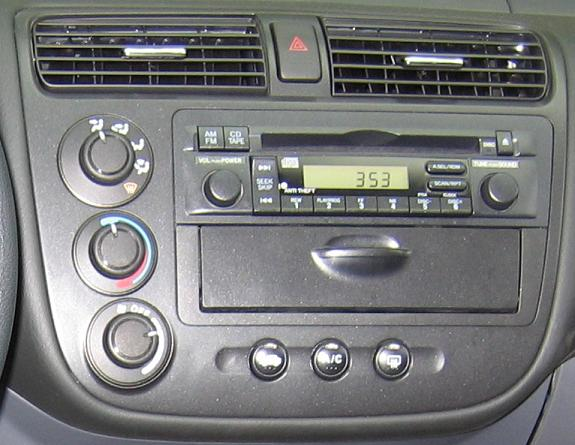

Here are some picture of the 2005 Honda Civic LX 5-speed 4-door sedan that I purchased on Tuesday, 19 July, 2005.

Note the platform on the left on the floor. Perfect for resting the clutch foot during long driving sessions in a single gear.
Cruise control with manual transmission actually works.

The backlit instrument panel is stunning. This picture doesn't do it justice, but should give you an idea.
It has two trip odometers. I have no idea why they made the speedometer go up to 150. Topping out at 120 would have made it easier to read.

And here's the climate control and radio/CD panel.
